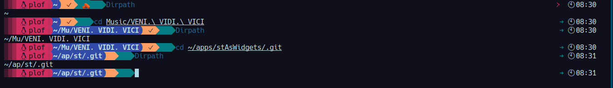

Cuando estaba modificando ZSH, me di cuenta que el prompt
starship, por el que estaba cambiando
oh-my-zsh no mostraba el path de los archivos como a mi gustaba, es decir
starship mostraba el path asi:
.../Actual/directorio/subcarpeta, mientras que el que me gustaba de
oh-my-zsh lo mostaraba de forma mas corta, ese mismo ejemplo seria
~/Ac/di/subcarpeta, el cual se me hacia mas corto y conciso, afortundamente
starship nos permite ejecutar cualquier comando y tener la salida en el prompt.

Este programa en C hace especificamente eso, lee el directorio actual y le el formato que queria